Week 9: Analysing and Extracting Meaning from Audio
Task 1 - Extract Features
For Week 9's task, we were asked to identify 3 tracks related to out portfolio theme and present a Spectrogram, Mel Frequency Cepstral Coefficients, and a Chromagram alongside the orignal waveform. For the purposes of this weeks task, I will reuse the tracks I analysed in Week 8.
Virtual Self - Duvet (Love Letters From Amsterdam Edit)
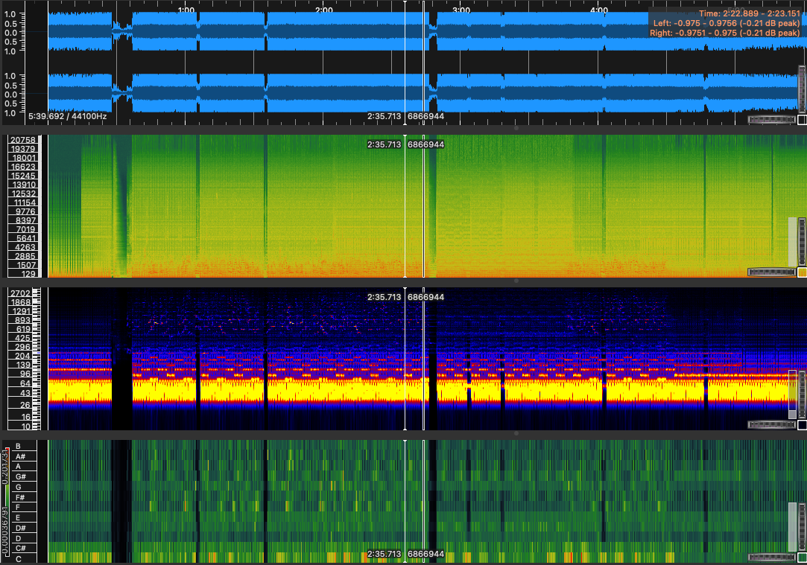
Virtual Self - Tremor (Devon Re-Make)
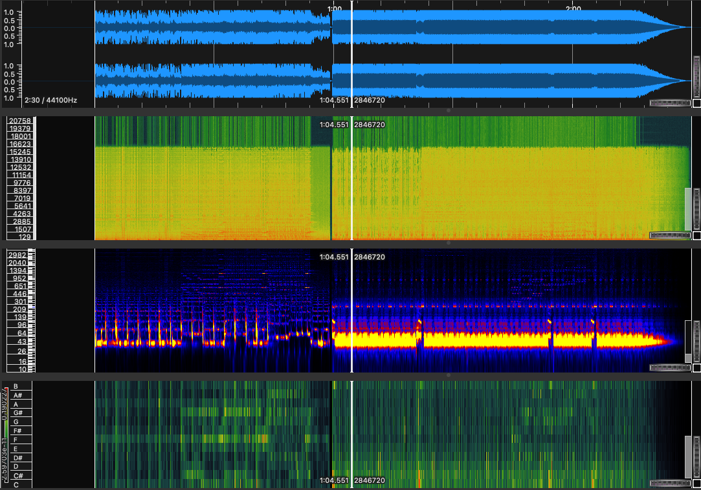
Aftershock & LCXCPR - Party Like a Rockstar
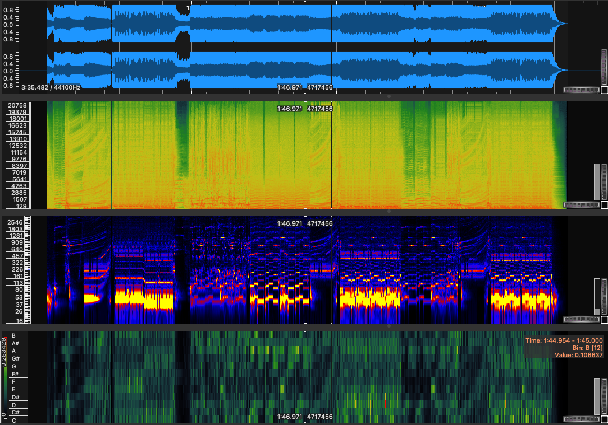
Computing and Visualising Histograms
Computed Spectrograms to Histograms
| Virtual Self - Duvet (LLFA Edit) | Virtual Self - Tremor (Devon Remake) | Aftershock & LXCPR - Party Like A Rockstar |
|---|---|---|
| 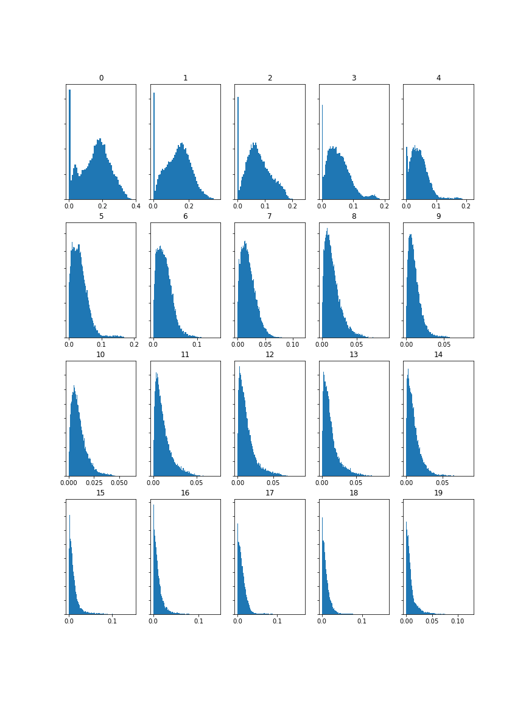 | 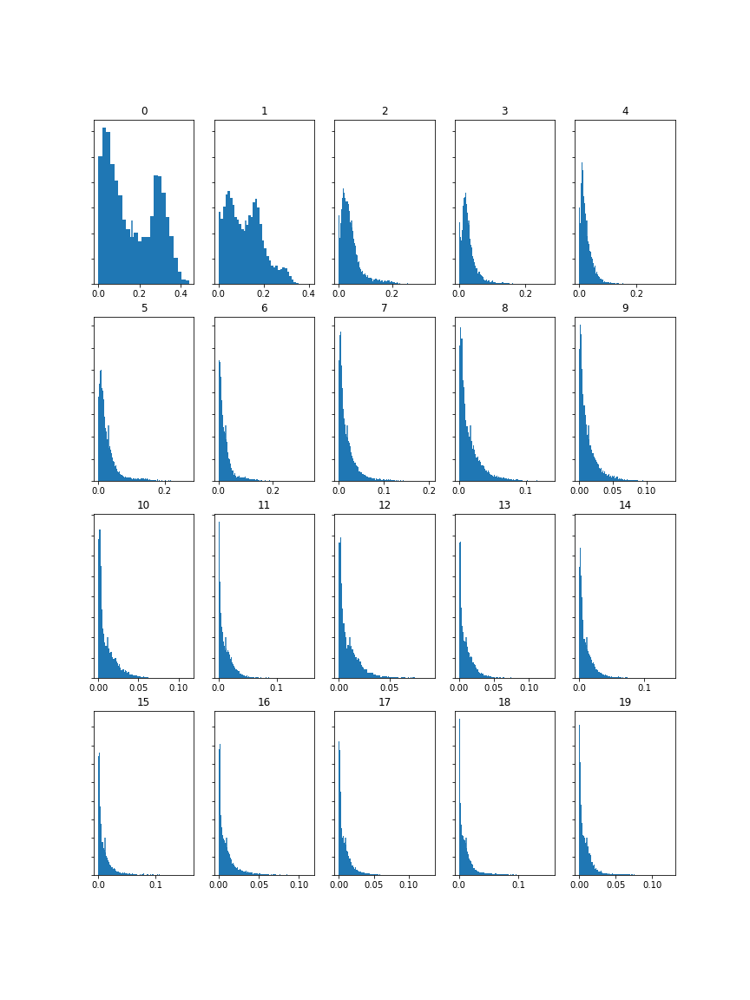 | 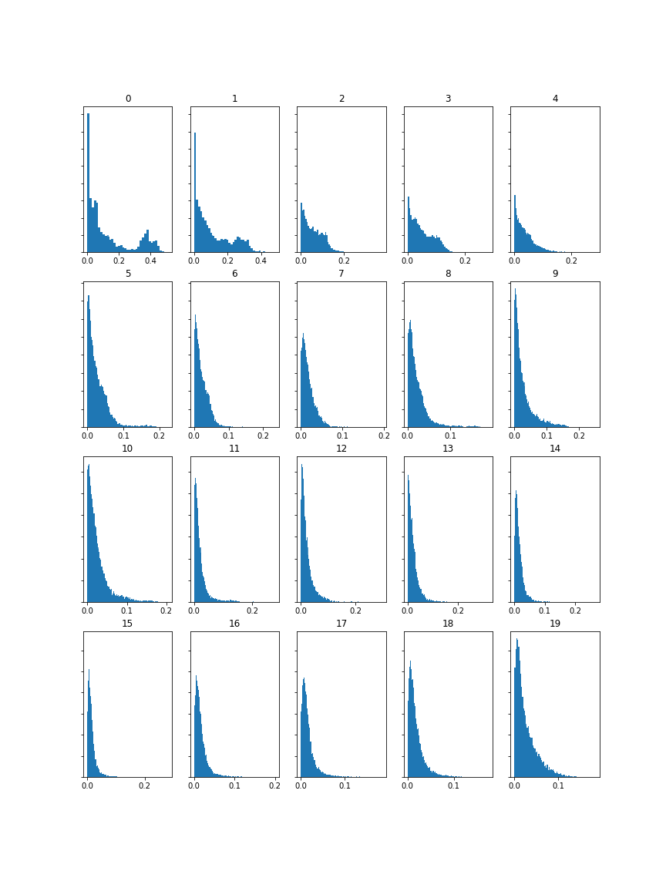 |
Computed MFCC's to Histograms
| Virtual Self - Duvet (LLFA Edit) | Virtual Self - Tremor (Devon Remake) | Aftershock & LXCPR - Party Like A Rockstar |
|---|---|---|
| 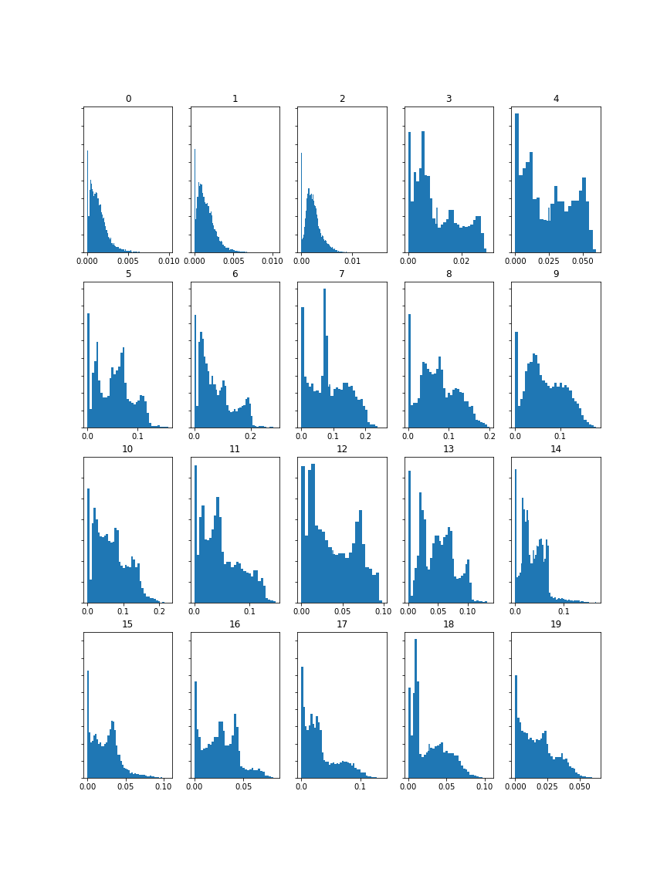 | 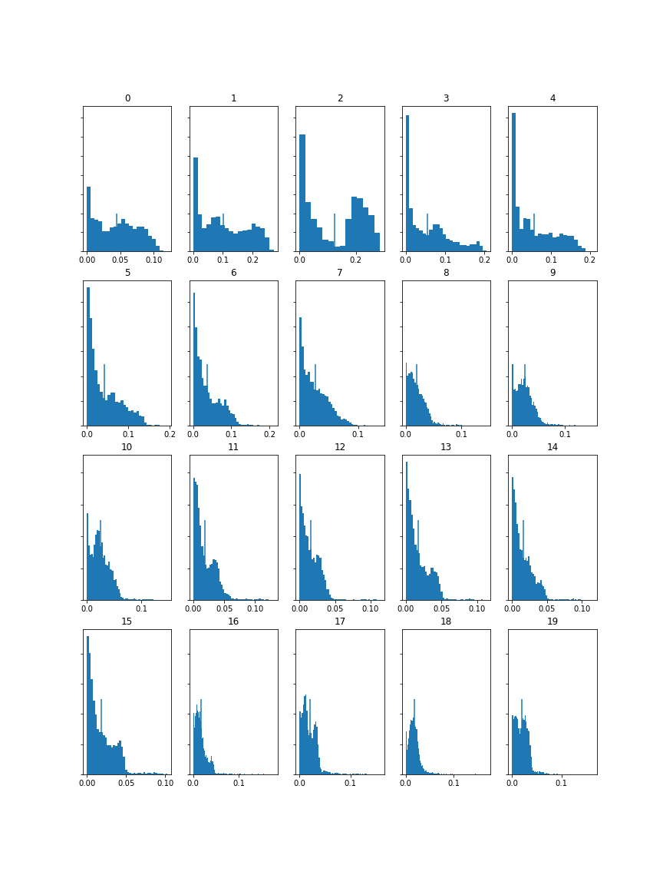 | 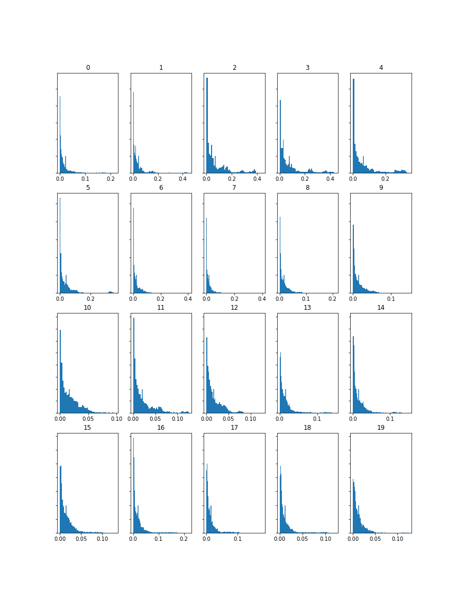 |
Computed Chromagrams to Histograms
| Virtual Self - Duvet (LLFA Edit) | Virtual Self - Tremor (Devon Remake) | Aftershock & LXCPR - Party Like A Rockstar |
|---|---|---|
| 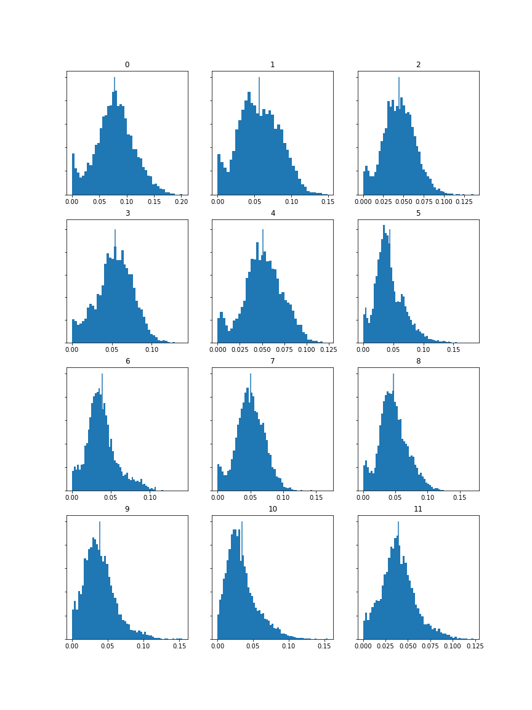 | 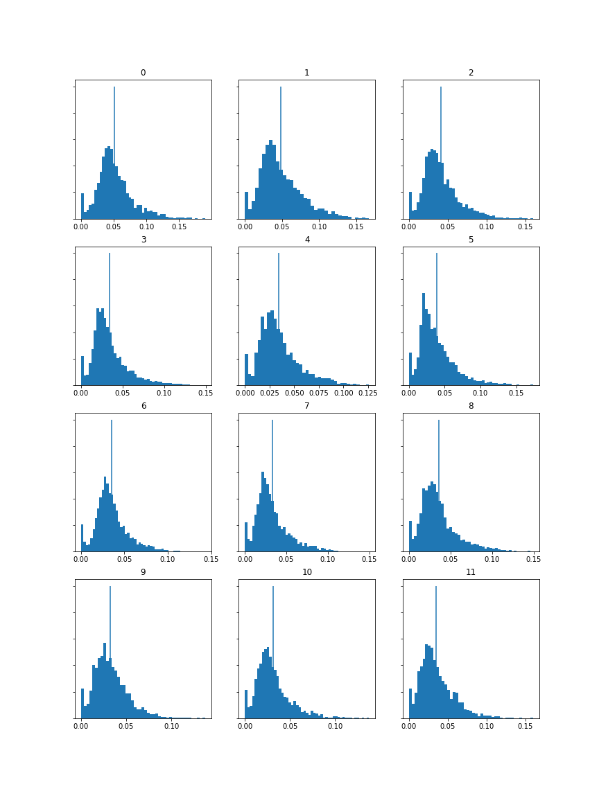 | 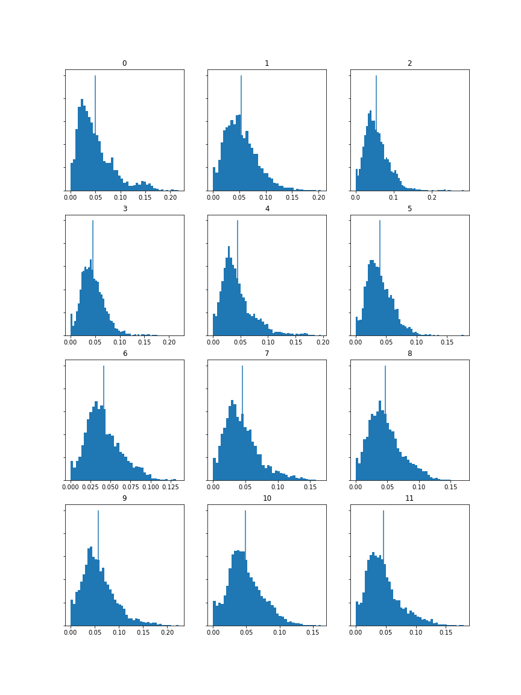 |
Analysis
As someone that doesn't come from a music theory based background, I found that the histograms were helpful at figuring out significant differences between the tracks. For example,
as all 3 are dance songs - a genre largely defined by melody and drums, I found prior to the task that there would be similarities. However, I decided to pick 3 tracks from
different subgenres of dance music. "Duvet" being a techno / trance track with a big melody and standard drums, where as "Tremor" has more of industrial influence with big drum parts. "Party Like a Rockstar" comes from Hardstyle
where the melody is big as well as having a loud bassy kick.
For this task, I've decided to analyse the MFCC Histograms. As all 3 tracks are from a similar genre, I expect to find some similarities in sound and frequency. As Duvet and Tremor were
originally produced by the same artists - Virtual Self, some of the features are very alike, such as the synth sounds. The MFCC graphs reflect that, being that they are similar in frequency - albeit, Tremor is a little more noise heavy
due to the intensity of the track. As Party Like A Rockstar is very kick heavy, where most of the "peak" sounds would come from, I would expect that the sound would be a sharp drop, which the histograms above reflect.